MBeans 탭
선택가능한 VisualVM플러그인 중에 JMX의 모니터링및 관리 기능을 추가하는 플러그인이 존재한다. 이 플러그인은 자바가상머신에 존재하는 모든 JMX MBean에 연결하는 MBeans 탭이다. 이 페이지는 JMX기술과 MBean에 대해 간단히 소개하고 VisualVM MBean 탭 자체에 대해서도 소개한다.
JMX 기술과 MBeans
JMX기술은 자바의 표준을 이루는 일부분이다. JMX는 애플리케이션이나 장치 그리고 서비스와 같은 자원을 관리하는 간단하고 표준적인 방법을 제공한다. JMX기술은 동적이기 때문에, 이러한 자원들이 생성되거나 설치및 구현되는 시점에 자원을 모니터링하고 관리할 수 있다. 추가로 자바가 제공하는 측정법(instrumentation)은 JVM소프트웨어를 모니터링하고 관리하기 위해 JMX기술을 사용하도록 한다.
JMX기술을 사용하는 것은 해당 자원을 관리빈, 이나 MBeans으로 알려진 한개 이상의 자바 객체에 의해 측정한다. 이러한 MBean은 MBean 서버로 알려진 핵심적인 객체 서버에 등록된다. MBean서버는 관리에이전트처럼 동작하고 자바 프로그래밍 언어가 가능한 대부분의 장치에서 동작한다.
플랫폼 MBeans
플랫폼 MBeans JVM소프트웨어와 자바 런타임 환경인 JRE의 다른 컴포넌트를 모니터링하고 관리하기 위해 자바가 제공하는 MBean의 묶음이다. 각각의 플랫폼 MBean은 클래스로딩 시스템, JIT 컴파일 시스템, 가비지 컬렉터 등등 JVM소프트웨어의 기능을 캡슐화한다. 이러한 MBean들은 다른 가상머신 기능을 모니터링하고 관리하도록 JMX스펙을 따르는 모니터링및 관리 툴을 사용하여 표기되거나 상호작용할 수 있다. 이러한 모니터링및 관리툴중 하나가 VisualVM이다.
자바 SE는 플랫폼 MBean이 등록된 표준 플랫폼 MBean 서버를 제공한다. 플랫폼 MBean서버는 생성하고자 하는 또다른 MBean을 등록할 수도 있다.
JMX기술에 대한 더 많은 정보
JMX기술과 자바 SE의 모니터링및 관리에 대해 좀더 알고자 한다면, 다음 문서를 참고하자.
MBean탭 플러그인 추가
VisualVM을 사용해서 실행중인 JVM소프트웨어 인스턴스의 MBean에 접근하기 위해, MBean탭 플러그인을 설치할 필요가 있다. 플러그인을 설치하기 위해서는 다음의 과정을 거쳐야 한다.
- VisualVM의 메인메뉴에서 Tools아래 Plugins를 선택한다. 그러면 다음의 창을 볼수 있을것이다.
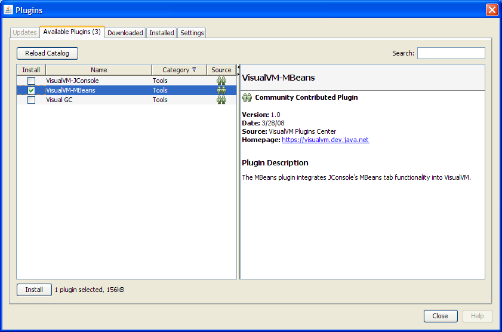
- 'VisualVM-MBeans'을 체크하고 'Install'을 클릭한다.
- 나머지는 화면에 나오는데로 그대로 따라가면 된다.
실행중인 자바 애플리케이션을 표시하려면, 마우스 우측 버튼을 클릭하고 'Open'을 선택한다. 그러면 VisualVM의 우측창에서 MBean탭을 볼수 있다. VisualVM이 실행중인 애플리케이션을 모니터링하고 있다면, MBean탭이 순서대로 보이도록 하기 위해, VisualVM의 오른쪽 패널에서 모니터링중인 애플리케이션을 닫을 필요가 있다. 그리고 애플리케이션에서 마우스 우측 버튼을 클릭해서 모니터링을 재시작하고 'Open'을 다시 선택한다.
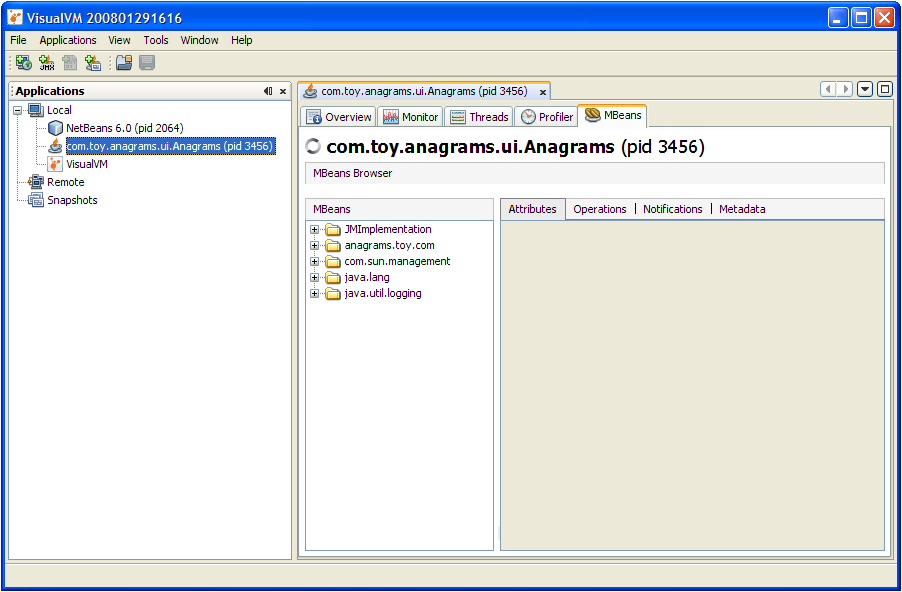
VisualVM에서 MBean표시
MBean탭은 플랫폼 MBean서버에 등록된 모든 MBean에 대한 정보를 보여준다. MBean탭은 플랫폼 MBean 측정법(instrumentation)의 모든 기능에 접속이 가능하다. 추가로 MBean탭을 사용해서 사용자가 직접 생성한 애플리케이션의 MBean을 모니터링하고 관리할 수도 있다.
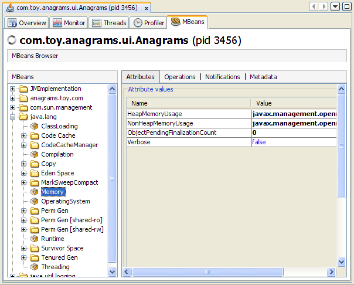왼쪽에 보이는 트리는 현재 실행중인 MBean을 모두 보여준다. 트리에서 특정 MBean을 선택하면 위의 그림처럼 MBean의 속성이나 작업(operations), 알림 그리고 메타데이터를 보여주기 위해 오른쪽에 탭이 나타난다. 이러한 탭들은 이어서 좀더 세세하게 다룰것이다.
모든 플랫폼 MBean과 각각의 다양한 속성, 작업, 알림및 메타데이터는 MBean탭을 통해 접근이 가능하다. 위 그림은 메모리(Memory) 플랫폼 MBean의 속성을 보여준다.
MBean 트리 구성
기본적으로, MBean은 각자의 객체명에 기초하여 트리내 표기된다. 객체명이 생성되는 시점에 명시되는 키 프로퍼티의 순서는 MBean이 MBean트리에 추가될때 MBean탭에 의해 보존된다. The exact key property list that the MBeans tab will use to build the MBean tree will be the one returned by the method ObjectName.getKeyPropertyListString(), with type as the first key, and j2eeType, if present, as the second key.
However, relying on the default order of the ObjectName key properties can sometimes lead to unexpected behavior when the MBeans tab renders the MBean tree. For example, if two object names have similar keys but their key order differs, then the corresponding MBeans will not be created under the same node in the MBean tree.
For example, suppose you create Triangle MBean objects with the following names.
com.sun.example:type=Triangle,side=isosceles,name=1 com.sun.example:type=Triangle,name=2,side=isosceles com.sun.example:type=Triangle,side=isosceles,name=3
As far as the JMX technology is concerned, these objects will be treated in exactly the same way. The order of the keys in the object name makes no difference to the JMX technology. However, if VisualVM connects to these MBeans and the default MBean tree rendering is used, then the object com.sun.example:type=Triangle,name=2,side=isosceles will end up being created under the Triangle node, in a node called 2, which in turn will contain a sub-node called isosceles. The other two isosceles triangles, name=1 and name=3, will be grouped together under Triangle in a different node called isosceles, as shown below.
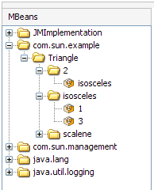To avoid this problem, you can specify the order in which the MBeans are displayed in the tree by supplying an ordered key property list. You can set the ordered key property list by selecting VisualVM's Tools | Options menu, and clicking on the MBeans button, as shown below.
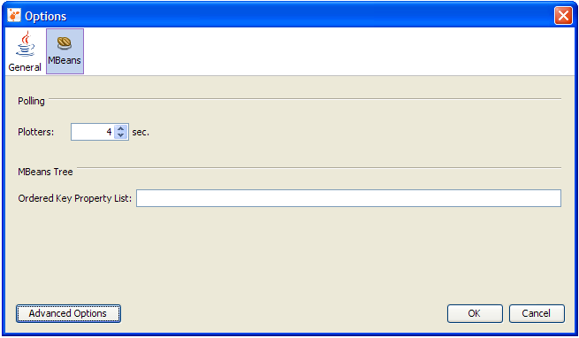
The key property list system property takes a comma-separated list of keys, in the order of your choosing, where each key must be a string representing an object name key or an empty string. If a key specified in the list does not apply to a particular MBean, then that key will be discarded. If an MBean has more keys than the ones specified in the key property list, then the key order defined by the value returned by ObjectName.getKeyPropertyListString() will be used to complete the key order you define in the Ordered Key Property List field. Therefore, specifying an empty list of keys simply means that VisualVM will display keys in the order they appear in the MBean's ObjectName.
So, returning to the example of the Triangle MBeans cited above, you could chose to configure VisualVM so that all your MBeans will be grouped according to their side key property first, and their name key property second. To do this, you would add the following in the Ordered Key Property List field in the MBeans tab of the Tools | Options menu:
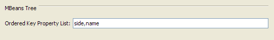
If you restart the application, the MBeans will now show up in VisualVM's MBeans tree as shown in the following figure.
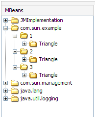
As you can see, the side key comes first, followed by the name key. The type key comes at the end because it was not specified in the key property list, so the MBean tree algorithm applied the original key order for the remaining keys. Consequently, the type key is appended at the end, after the keys which were set in the MBeans options menu.
According to the object name convention defined by the JMX Best Practices Guidelines, the type key should always come first. So, to respect this convention you should set the following key property list.
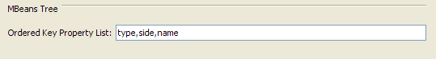
Setting the above key property list will cause VisualVM to render the MBean tree for the Triangle MBeans as shown below.
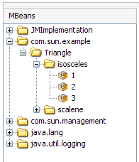This is obviously much more comprehensible than the first two MBean trees shown in this section.
MBean Attributes
Selecting the Attributes tab displays all the attributes of an MBean. The following figure shows all the attributes of the Threading platform MBean.
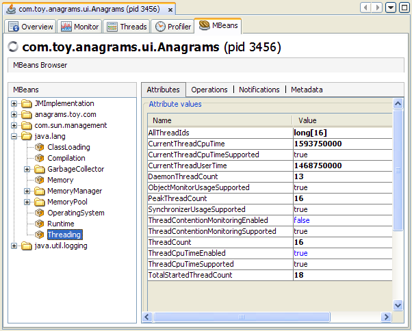You can display additional information about an attribute by double-clicking on the attribute value, if it appears in bold text. For example, if you click on the value of the HeapMemoryUsage attribute of the java.lang.Memory MBean, you will see additional information about the attribute, as shown below.
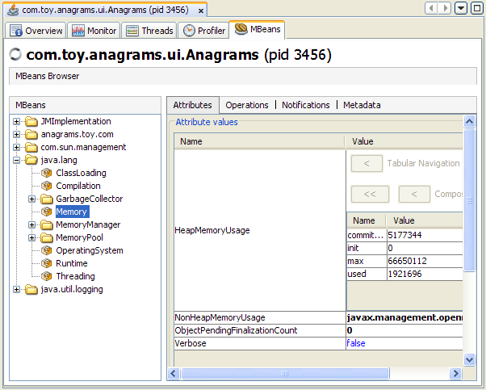Double-clicking on numeric attribute values will display a chart that plots changes in that numeric value. For example, double-clicking on the CollectionTime attribute of the Garbage Collector MBean MarksweepCompact will plot the time spent performing garbage collection.
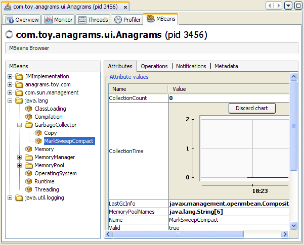
You can also use VisualVM to set the values of writable attributes. The value of a writable attribute is displayed in blue. Here you can see the Memory MBean's Verbose attribute.
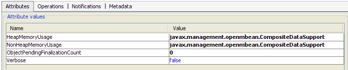You can set attributes by clicking on them and then editing them. For example, to enable or disable the verbose tracing of the garbage collector in VisualVM, select the Memory MBean in the MBeans tab and set the Verbose attribute to true or false. Similarly, the class loading MBean also has a Verbose attribute, which can be set to enable or disable class loading verbose tracing.
MBean Operations
Selecting the Operations tab displays all the operations of an MBean. The MBean operations appear as buttons, that you can click to invoke the operation. The figure shows all the operations of the Threading platform MBean.
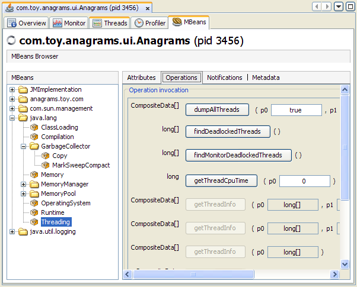The image below shows the result of clicking on the dumpAllThreads button to invoke the corresponding option.
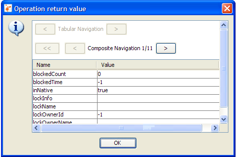
MBean Notifications
You can subscribe to notifications from MBeans by selecting the Notifications tab, and clicking the Subscribe button at the bottom of the main pane. The number of notifications received is displayed in square brackets, and the Notifications node itself will appear in bold text when new notifications are received. The notifications of the AnagramsStats example MBean from the JMX NetBeans Tutorial are shown in the figure below.
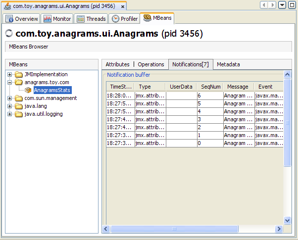MBean Metadata
An MBean's metadata, or MBeanInfo, is displayed by the Metadata tab. This includes information like the MBean's object name, class name, a brief description, and Descriptor information. The Metadata tab also shows the MBean's MBeanAttributeInfo. The Metadata tab for the Memory platform MBean is shown below.
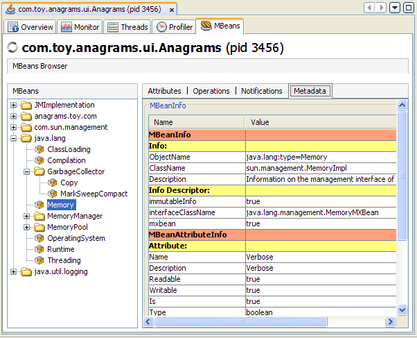
HotSpot Diagnostic MBean
VisualVM's MBeans tab also allows you to tell the HotSpot VM to perform a heap dump, and to get or set a VM option via the HotSpotDiagnostic platform MBean.
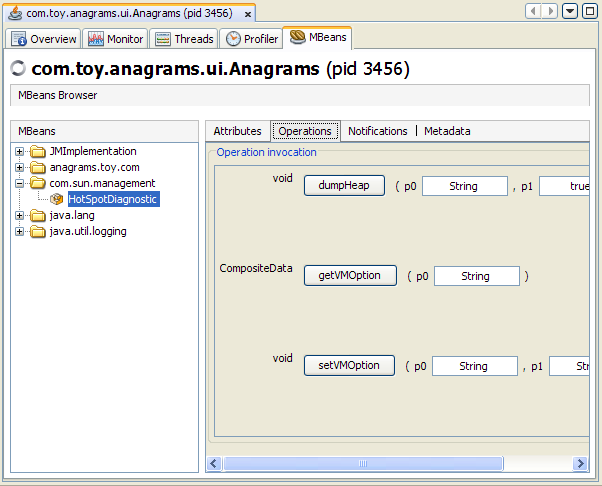You can perform a heap dump manually by invoking the com.sun.management.HotSpotDiagnostic MBean's dumpHeap operation. In addition, you can specify the HeapDumpOnOutOfMemoryError Java VM option using the setVMOption operation, so that the VM performs a heap dump automatically whenever it receives an OutOfMemoryError.